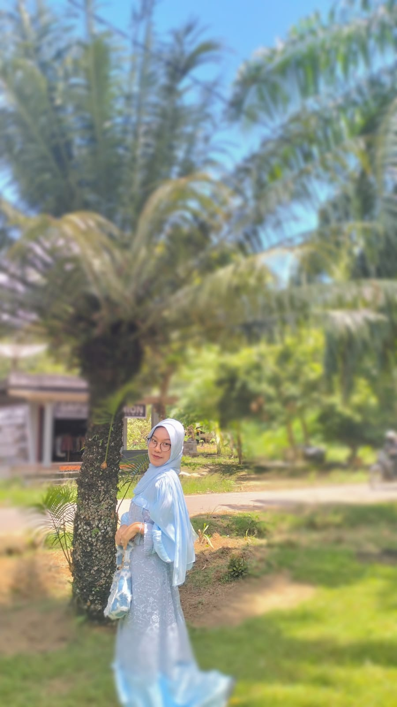
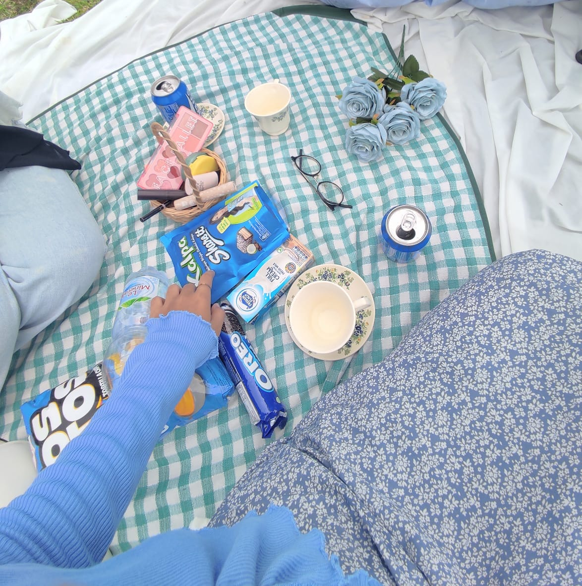

Home!!
Hi!!! Nama aku adalah Rayza Lintang Putri Harjanti
Aku seorang mahasiswi semester 4 di Universitas Nurul Huda. Aku mengambil program studi Sains Teknologi. Dimana, jurusan yang aku ambil adalah Informatika.
Hi!!! Nama aku adalah Rayza Lintang Putri Harjanti
Aku seorang mahasiswi semester 4 di Universitas Nurul Huda. Aku mengambil program studi Sains Teknologi. Dimana, jurusan yang aku ambil adalah Informatika.
Aku lahir di D.I Yogyakarta, tepatnya 4 agustus tahun 2004, dulu waktu masih kecil aku tinggal di Kebumen..tapi karena ada something yang serius aku harus pindah ke Sumatera Selatan tepatnya OKU TIMUR yaitu alamat kakek dan nenek. Bisa dibilang rumah masa kecil mama ku hehe
Sebenenya ngga penting si, tapi karena masuk di bagian header "About Me" jadi aku bakal ceita sedikit waktu aku kecil, dikit aja kok.
Jadi kata mama, waktu aku kecil aku ga pernah yang namanya nginjek tanah, karena aku cucu kesayangan eyang dari papa HAHAHA..aku selalu jadi rebutan ibu-ibu kompleks di sana, katanya karena aku lucu kaya orang cina. EH JANGAN SALAH!! aku jadi kuning langsat waktu gede karena sering ngebolang waktu pindah ke OKUT.
Karena pindah kesini aku jadi sering kena matahari, mana main kesawah mulu ehe. btw warna fav aku itu baby blue or pastel blue and blue sky..pokoknya biru tapi yang kaya warna langitt..
Jadi fun fact, hobi aku itu gambar..dari aku tk aku udah suka banget coret-coret dikertas apapun itu. Kayanya aku bisa gambar atau suka gambar turun dari kakek ku yang disini deh..aku suka diajarin dia juga caranya gambar.
Waktu kecil gambarnya dibuku gambar atau dibuku tulis, tapi sekarang coret-coretnya di catatan keep atau ibisPaint X hihihi